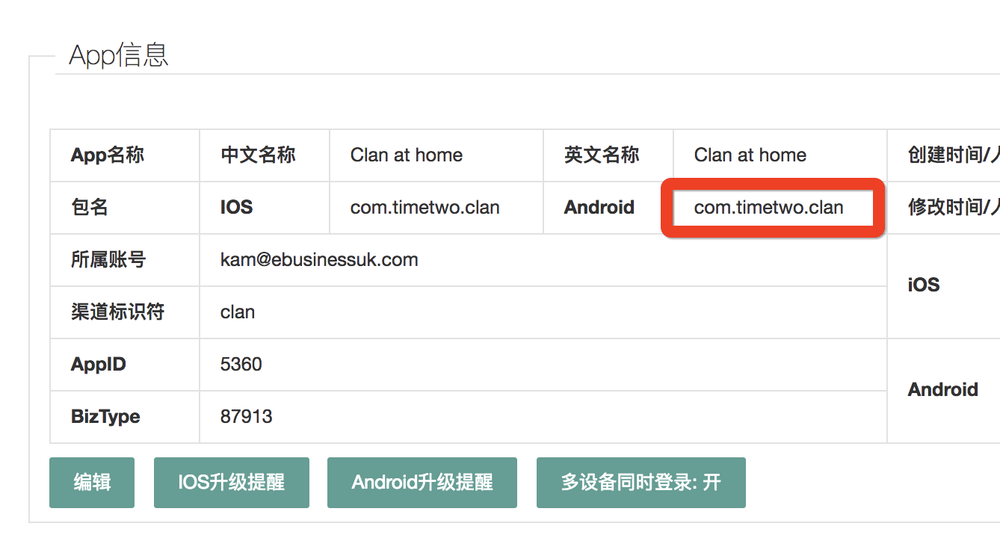
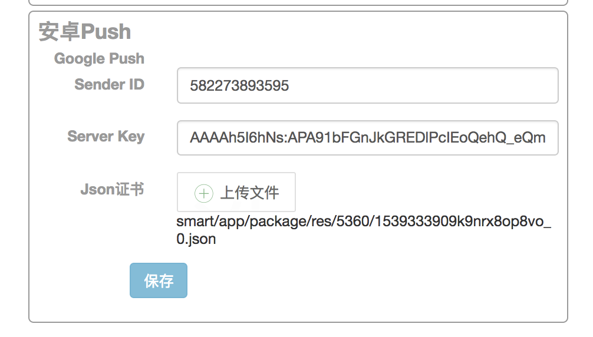
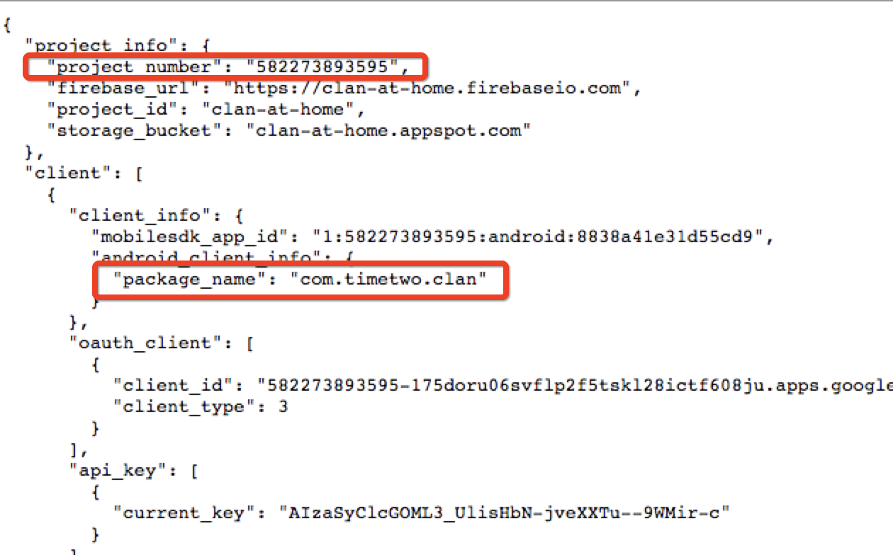
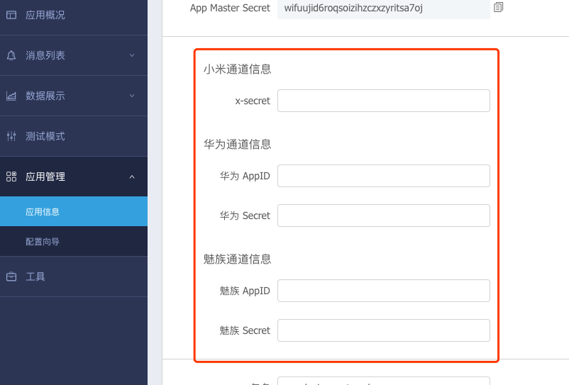
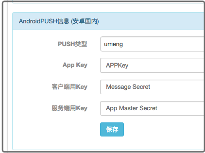
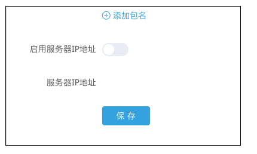
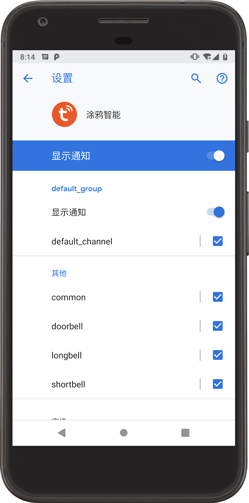
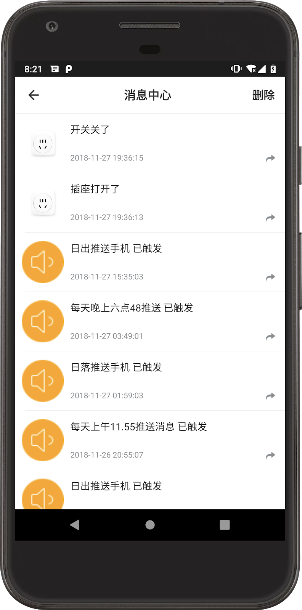
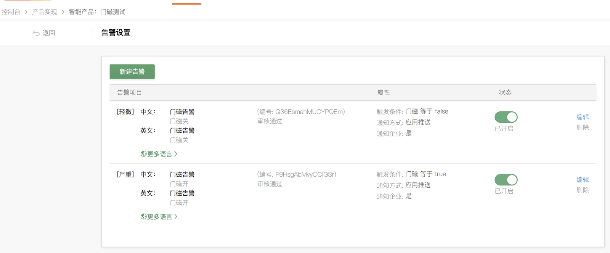
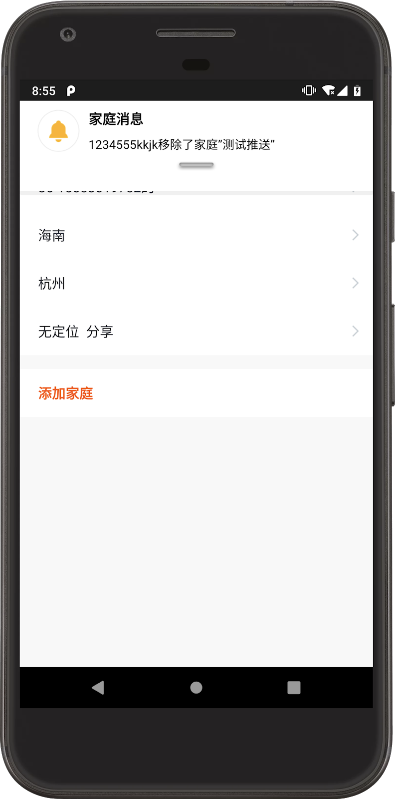

测试时确保可以连接Google正常。

点击Json证书的链接，打开链接后检查project_numer与Sender ID是否一致，package_name与应用包名是否一致。不一致说明配置错误。

申请到的友盟的第三方通道的信息需要在友盟的后台配置相应的信息。同时需要在涂鸦智能的应用管理后台配置相应的项目。确保信息对应配置无误

友盟设置里面需要手动关闭"启用服务器ip地址"选项

进入手机设置-应用和通知-找到对应的应用。（每个厂商进入的方式可能不一样，请进入对应的手机关于应用通知设置的地方。）
|  |
进入应用消息中心，查看是否有触发推送的消息记录。
|  |
如果设备告警类。如门磁开关，人体接近开关等。触发开关，在设备面板页看到有触发的记录。但是在消息中心看不到记录。需要去iot平台查看对应的设备是否配置了，触发推送的告警设置。

在应用中"家庭管理"-"添加家庭" ，新建一个家庭。然后再删除该家庭，如果应用顶部出现弹出框，提示移除了家庭，说明推送通道正常。

如果遇到其他问题找开发同学排查问题需要哪些信息？请把表格发送给开发同学。帮助开发同学快速定位问题。
1. 使用的应用名称和版本 | 如：涂鸦智能 v3.6.0 |
2. 友盟配置是否正确 | |
3. FCM配置是否正确 | |
4. 通知栏权限是否打开 | |
5. 如是设备告警类：是否配置告警设置 | |
6. 其他问题 | 详细的问题描述 |
更多问题请参考文档《Android 推送常见问题》